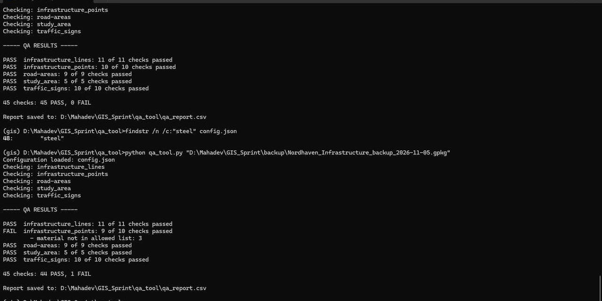

Back to selected work
Automated GIS QA/QC Tool
A Python tool that checks a five-layer infrastructure GeoPackage against written rules and produces a report that a reviewer can read without opening QGIS.
Independent learning and portfolio project on a demonstration dataset (Bremerhaven, State of Bremen). It contains no employer or client data.
How it works
- Read the rulesconfig.json holds the layer names, the ID field, the required attributes and the allowed values for each layer.
- Read each layerGeoPandas loads every layer from the GeoPackage.
- Run the checksEach check counts the features that fail it.
- ReportA summary prints in the terminal, and the results are saved as CSV and as an HTML page.
What it checks
| Check | What it finds | Why it matters |
|---|---|---|
| Missing or empty geometry | Features with no shape | They cannot be mapped or measured. |
| Invalid geometry | Self-intersecting or broken shapes | They break overlay and area calculations. |
| Lines shorter than 1 m | Tiny stubs left by digitising (line layers only) | They distort length statistics. |
| Duplicate feature IDs | The same identifier on two features | It breaks joins and references. |
| Empty required attributes | Blank values in key columns | It means incomplete data would be delivered. |
| Values outside allowed lists | Typos and wrong capitalisation | Filters and symbology silently miss those features. |
Results
| Dataset | Checks | Passed | Failed | Finding |
|---|---|---|---|---|
| Current GeoPackage | 45 | 45 | 0 | All five layers pass (11, 10, 9, 5 and 10 checks). |
| Older backup copy | 45 | 44 | 1 | Three invalid material values in infrastructure_points, where the allowed list expects lowercase values. |
Running the tool on the older copy is the proof that it catches real errors, not only clean data.


Design decisions and limits
- Rules live outside the code. Allowed values and required fields are edited in config.json, so a rule change does not need a code change, as long as the check type already exists.
- Two report formats. CSV for filtering and sorting, HTML for quick reading.
- Tested against known-bad data. The older backup copy gives a reproducible failing case.
- Limits. The tool is built around the five NORDHAVEN layer schemas and the checks listed above. It is not a general validator for any GeoPackage.